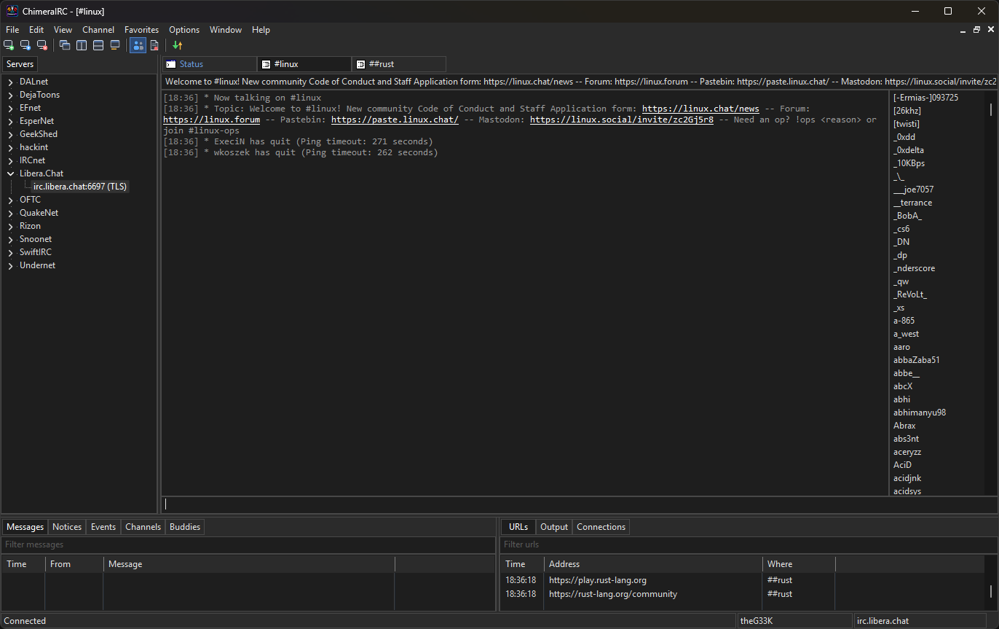
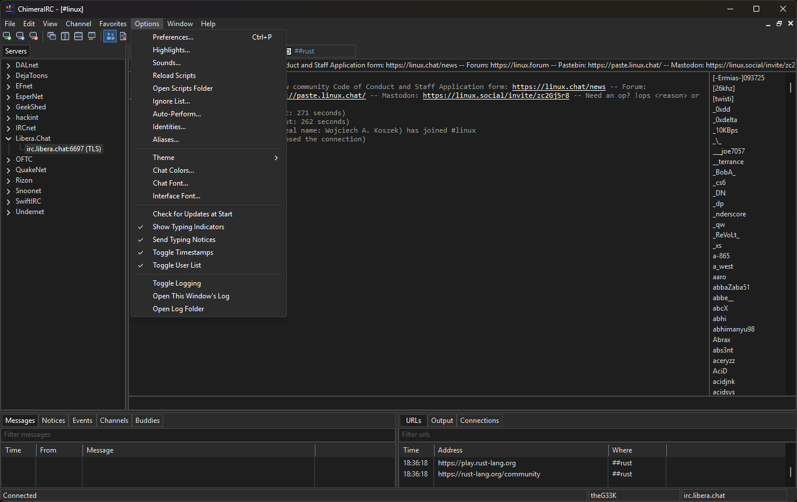
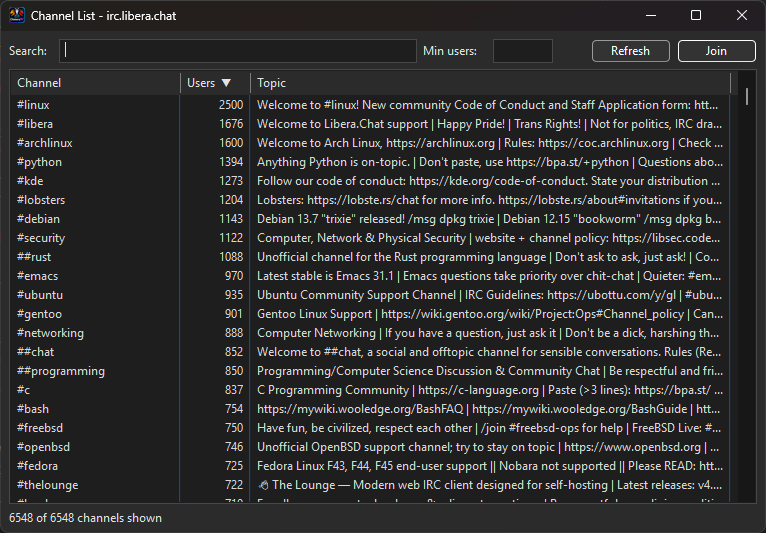
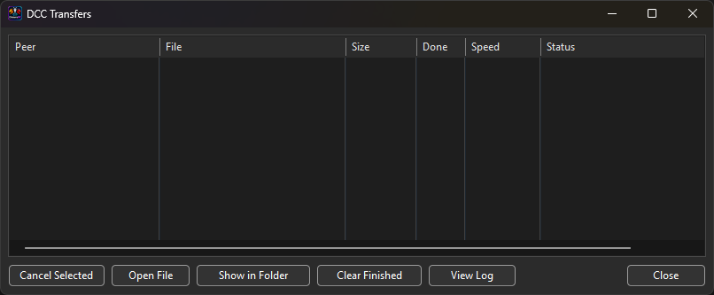
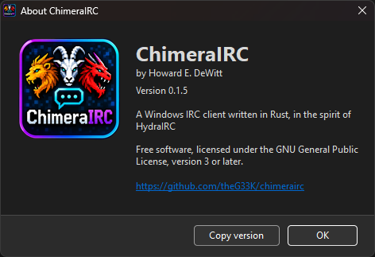

A Windows IRC client written in Rust, in the spirit of HydraIRC.
Classic docked-pane look, modern IRCv3 underneath.

ChimeraIRC keeps what made IRC clients of days past pleasant — MDI chat windows, panes docked around the edges, a classic menu and toolbar — and built as a native, memory-safe Win32 program with current standards. No runtime, no web view, no Electron, no tracking or telemetry, and absolutely no BS.
TLS everywhere, SASL PLAIN / SCRAM-SHA-256 / EXTERNAL (client certificates) and Strict Transport Security. No password is ever stored — you are asked each time.
Server time, message tags, echo-message, account and away notifications, netsplit summaries, chat history, typing indicators and MONITOR.
Servers, Events, Messages, Notices, URLs, Channels, Connections, Users, Buddies and Output. Drag to any edge, split, float, and save up to five layouts.
Flat themes that switch at run time or follow Windows. Choose your own chat colors and fonts; toolbar icons are drawn for each theme and tested at high DPI.
Tab completion, regex highlights, clickable links with a “where does this really go” hint, find in window, log search and multi-line paste protection.
Files and chats with resume, passive, IPv6, turbo and TLS. UPnP / NAT-PMP / PCP port mapping. Drag a file or paste a picture onto a chat to send it.
Buddy list with groups, ignore list, away marks in the nick list, rank-colored nicks and a global user list.
Identities per network, auto-perform scripts, aliases, favorites with auto-join, and per-event sounds with your own .wav files.
A per-user MSI — no administrator rights — or a portable ZIP. Upgrades in place, and Help → Check for Updates tells you when a new release is out.
Float windows or tile them, dock panes where you like, and flip themes from the Options menu. Click any image to enlarge.

A sortable, searchable channel list with a minimum-user filter and one-click join. Thousands of channels stay snappy.
#channel anywhere to join
Files and chats with resume, passive, IPv6, turbo and TLS. UPnP / NAT-PMP / PCP port mapping. Drag a file or paste a picture onto a chat to send it.

A sans-IO protocol engine written in Rust, kept separate from the GUI, with TLS on port 6697 by default and automatic reconnect with growing delays.
server-timemessage-tagsecho-messageextended-joinmulti-prefixuserhost-in-namesaccount-notifyaway-notifychghostsetnamebatchchathistorytypingMONITORSASL PLAINSCRAM-SHA-256SASL EXTERNALSTS
identify ******./command.-- answer "!ping" in the channel it was said in chimera.on("message", function(m) if not m.mine and not m.private and m.text:lower():find("!ping", 1, true) then chimera.say("pong, " .. m.nick) end end) -- add a /hello command chimera.command("hello", function(args) chimera.echo("Hello, " .. (args ~= "" and args or "world")) end) -- run something every 10 minutes chimera.timer(600, function() chimera.run("/uptime") end, true)
Drop .lua files in your scripts folder to answer messages, add your own /commands, react to joins and connections, and run timers.
/script reload — no restart.Grab ChimeraIRC-<version>-x64.msi (per-user, no admin rights) or the portable .zip from the GitHub releases page.
Not code-signed yet, so SmartScreen may say “unknown publisher”: choose More info → Run anyway. Signing is on the roadmap.
Run the MSI. It installs to %LocalAppData%\Programs\ChimeraIRC and adds a Start menu shortcut. Or unzip the portable build anywhere.
Choose File → Connect (Ctrl+S), double-click a network in the Servers pane — or just type in the entry box:
/server irc.libera.chat /join #rust
Type /help for every command and press Tab to complete commands, #channels and nicks. Settings live in Options.
Everything starts with /; anything else you type is said in the current window. /server uses TLS by default; add -plain to skip it.
| Command | What it does |
|---|---|
/server [-plain] <host> [port] [nick] | Connect to a server (TLS unless -plain). |
/join · /part | Join or leave channels. |
/query · /msg · /notice | Private chats and messages. |
/me · /say | Do an action; say a line that starts with a slash. |
/nick · /away · /back · /setname | Your identity and status. |
/topic · /mode · /whois · /list | Channel and user information. |
/ns · /cs | Talk to NickServ / ChanServ; logins are masked. |
/ignore · /unignore | Hide people. |
/buddy · /monitor | Watch when people come and go. |
/history | Fetch chat history from servers that have it (before|after|around|between). |
/dcc send · /dcc chat | File transfers and direct chats. |
/find · /logsearch | Search the window; search your saved logs. |
/script · /sound · /alias | Lua scripts, event sounds, your own commands. |
/uptime · /identity · /perform | Uptime, identities, connect scripts. |
/quit · /clear · /close · /raw | Leave, tidy up, or send a raw IRC line. |
Ctrl+S connect · Ctrl+J join · Ctrl+L channel list · Ctrl+F find (F3 next) · Ctrl+Shift+F search logs · Ctrl+P preferences · Alt+1…5 dock layouts · Ctrl+Shift+W close window
Everything is stored per user, outside the install folder, so upgrading or uninstalling never touches it. Back up or move your whole setup by copying one file.
%AppData%\ChimeraIRC\settings.ini — all settings%AppData%\ChimeraIRC\logs\ — chat logs, one folder per server%AppData%\ChimeraIRC\scripts\ — your Lua scripts
Plans and ideas, not promises — the order can change.
Deliberately not done: fetching pages to preview links (it tells that site who looked), uploading pasted pictures to a web service (DCC to one person instead), and storing passwords. Ever.
You need Windows and Rust; the repository pins the GNU toolchain. Three crates, cleanly layered:
chimerairc-proto — message parse/encode, IRCv3 tags, CTCP. No I/O.chimerairc-core — sans-IO session engine, TLS transport, DCC, port mapping.chimerairc-gui — the native Win32 program.# run the tests cargo test --workspace # start the program cargo run -p chimerairc # build the MSI and portable ZIP into dist\ .\packaging\build-installer.ps1
Free software under the GPL. Bug reports and suggestions are welcome as GitHub issues.